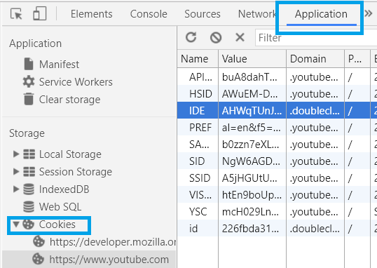
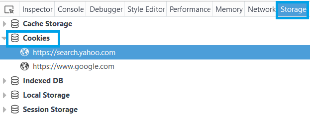
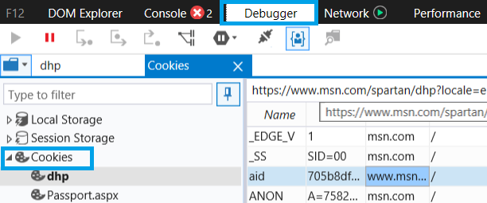

Browser Dev Tools
Accessing Dev Tools
When in doubt:
Press Command+Option+I (Mac) or Control+Shift+I (Windows, Linux)
OR
Right click on the page and select Inspect/Inspect Element
Menus:
| Chrome | Firefox | Edge |
|---|---|---|
 |
 |
 |
Network Inspection
What does it do?
- Shows time taken, origin and other information on any network request from page.
- Can simulate user experience for first visits or visits on mobile.
- Examine detailed header, response and load time information.

Chrome

- Visual waterfall, hover for ms breakdown. Adjustable timeline.
- Running screenshot feature to visually track loaded elements.
- Columns are customizable and requests can be filtered on columns.
Firefox

- Waterfall shown in ms, but uses color-coded icon sets.
- Requests can be resent with editable headers.
- Security tab, Stack Trace tab for requests made from JS scripts.
- Performance Analysis Mode
Firefox Performance Analysis Mode


Edge

- Visual waterfall but timeline bounds can't be changed.
- Columns are not customizable.
- No throttling option.
Network Details
| Chrome | Firefox | Edge |
|---|---|---|
 |
 |
 |
Emulation
What does it do?
- Simulate page display across different screen sizes and resolution to ensure mobile friendliness.
- Can simulate different touch inputs, geolocation status and device orientation.
- Not comprehensive, testing on a physical device is preferable. Load times from mobile CPU/GPU are not emulated.

Chrome - Device Mode

- Large number of device presets.
- Extensive display options. Can list media queries from CSS, can emulate Android keyboards, etc.
- Geolocation and orientation options under Dev Tools > Menu > More Tools > Sensors
Firefox - Responsive Design Mode

- Device-pixel ratio (DPR) available on top bar.
- Contains the network throttling option.
- Minimal orientation options, no geolocation options.
Edge - Emulation

- Device presets are iPhone 6 <. Older devices require knowledge of settings.
- Minimal orientation options.
Cookies
Where are they?
| Chrome | Firefox | Edge |
|---|---|---|
|  |  |  |
What are they?

- Contains small amount of data specific to a website. Customizes browsing experience.
- Firefox and Edge let you edit cookies directly. Chrome does not.
- All can selectively delete or delete all cookies.